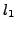

The area of sparse representation of signals is drawing tremendous attention in recent years. The idea behind the model is that a signal can be approximated as a linear combination of a few ``atoms'' from a prespecified and over-complete ``dictionary''. The sparse representation of a signal is often achieved by minimizing an  penalized least squares functional. Various iterative-shrinkage algorithms have recently been developed and are quite effective for handling these problems, surpassing traditional optimization techniques. In this paper, we suggest a new simple multilevel approach that reduces the computational cost of existing solvers for these inverse problems. The new method takes advantage of the typically sparse representation of the signal and coarsens by reducing the dimension of the problem by gradually ignoring ostensibly irrelevant data from the over-complete dictionary. Analytical observations suggest, and numerical results confirm, that this new approach may significantly enhance the performance of existing iterative shrinkage algorithms in cases where the dictionary is an explicit matrix.